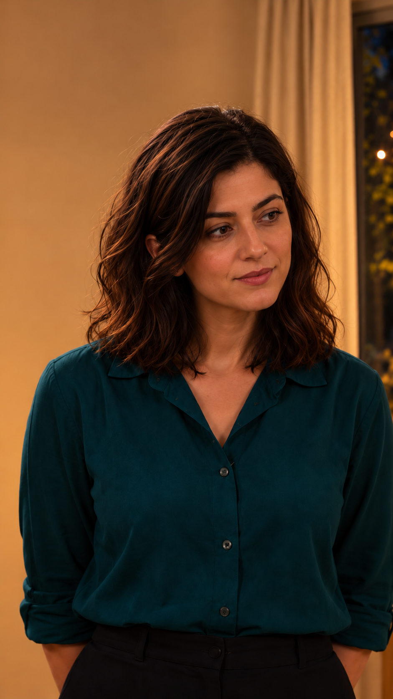
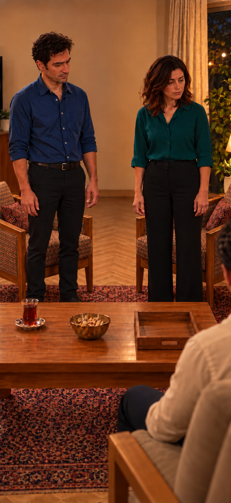
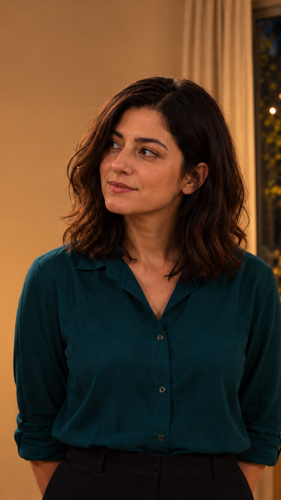
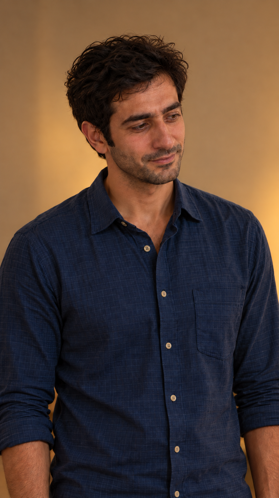
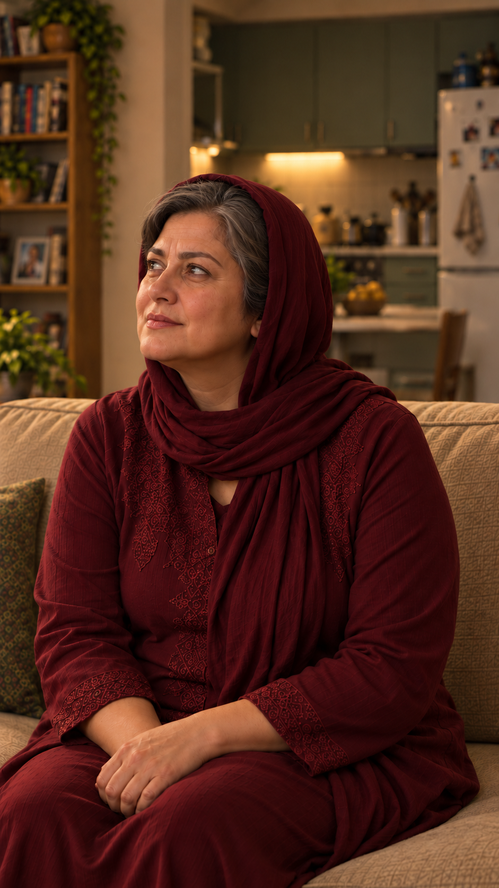
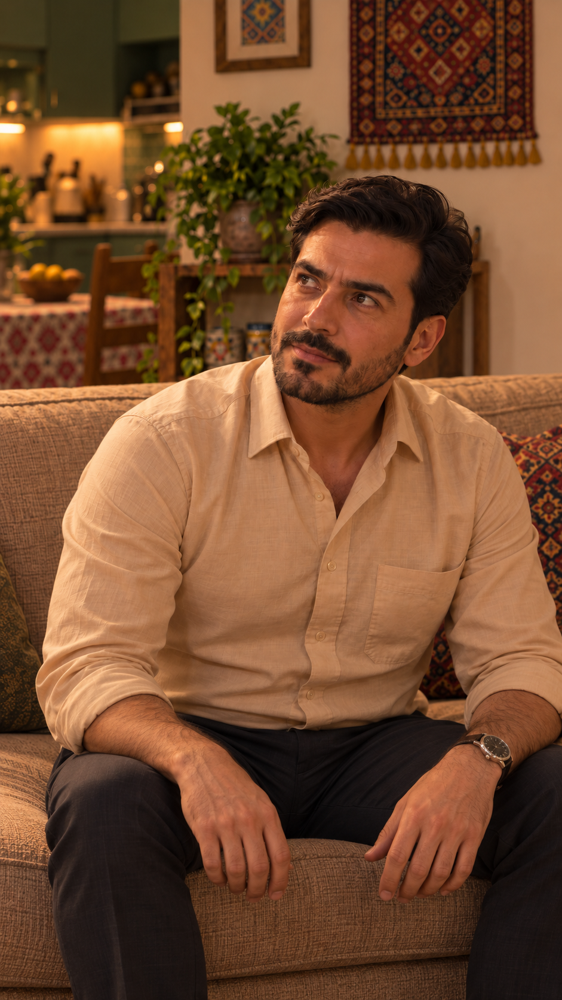
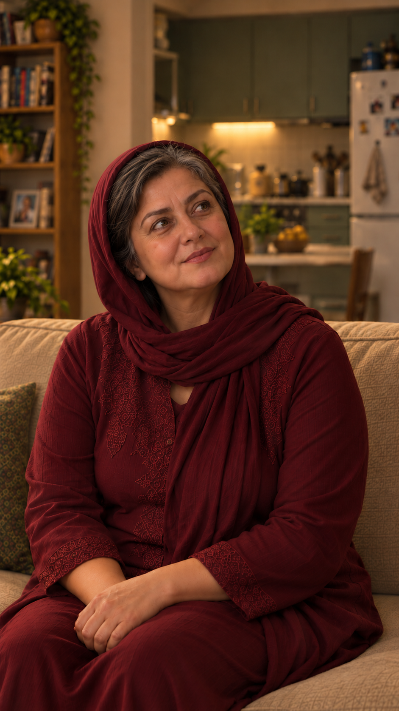
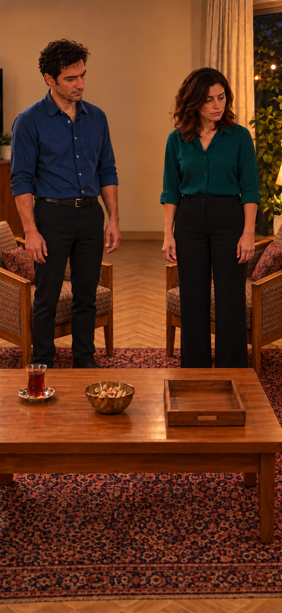
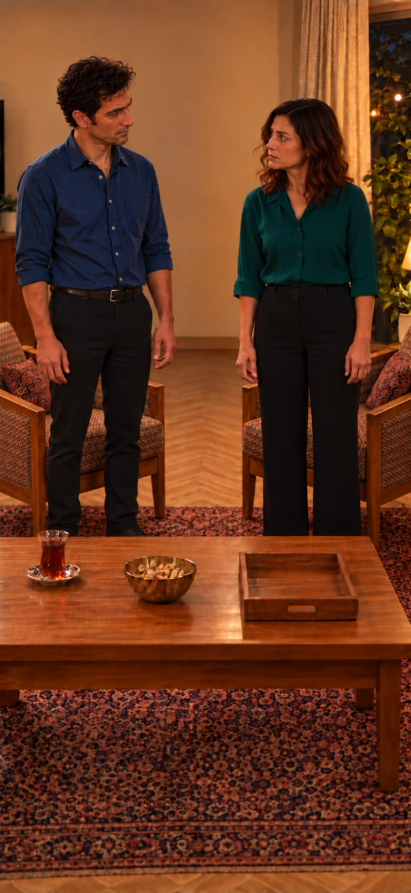

بستهٔ تولید قسمت پنج
پرامپتها و طرح اتصال آمادهٔ مرورند؛ ارسال هنوز مسدود است. شنیدن ضبطها، قاب دقیقِ آغاز بدرقه، قالب نهایی ورودی و هزینهٔ جاری هنوز باید تکمیل شوند. هیچ تولید ویدیو یا مصرف اعتبار انجام نشده.
زمان هدف۴۴٫۵۴۲ثانیه؛۸گفتار تازه، سؤال بازیافتی و یک واکنش بیکلام. همهٔ دستورهای بازی پیشنهادیاند. ضبط کاربر مرجع زمان و اجراست؛ ورودی صوتیِ قابلقبول ابزار یا صدای نهایی شخصیت فرض نشده است.
مرور همهٔ عکسها · ثبت نسخه و اثرانگشتها
اتصال خداحافظی
فرهاد نزدیک پایان جملهاش شروع به بلندشدن میکند. مادر در بدرقه نگاه را آرام همراه او بالا میبرد؛ سپس نگاهش را به سامان میچرخاند. فرهاد هنگام گفتار بعدی مادر از محدوده میرود. در پایان، جای بدن و فاصلهٔ نازلی و سامان ثابت است و فقط سر و چشمها میچرخند.
قیمت و تنظیمات
مدل پیشنهادی Omni 1.1 Flash، روش Frames، قالب۹:۱۶، کیفیت پیشنهادی 360p، یک خروجی؛ برای هر گفتار۸ثانیه و برش محلی. این تنظیمات همین ارسال هنوز زنده تأیید نشدهاند. رابط فعلی پیشفرض۱۶:۹نشان میدهد؛ پیشفرض نباید خودکار پذیرفته شود. قیمت و سقف مجوز تعیین نشده؛ اعداد قسمت قبل قیمت این بسته نیستند.
سؤال آغاز؛ استفاده از منبع موجود
بازسازی۴٫۵۸۳ثانیهای هنوز شنیده و منتخب نشده؛ تولید تازه برای سؤال پیشنهاد نشده.

قاب موجود؛ برش نهایی هنوز باز است.
1 · نازلی
از4.583تا7.083ثانیه؛ سهم تدوین با واکنش همراه2.500ثانیه
ساندویچیِ سَرِ کوچه.
مخاطب: فرهادِ نشسته، راست و پایین تصویر
لحن پیشنهادی: روان و مطمئن، لبخند کوچک؛ پاسخ کوتاه بدون مکث نمایشی.
کنش: نازلی ایستاده در جای ثابت، نگاه راست و پایین به فرهاد؛ دستها پایین. تنها خودش حرف میزند.
اصل ضبط؛ بازهٔ پیشنهادی0.750تا3.250ثانیه. این بازه از تشخیص فعالیت گفتار است و هنوز شنیداری تأیید نشده.
موارد باز و بررسی مستقل
- شنیدن واقعی متن، لحن، تلفظ و سلامت مرزهای ضبط انجام نشده است.
- نسخه دقیق۹:۱۶و برش واقعی ورودی هنوز اعمال و بازبینی نشده است.
- امکان حفظ هویت صدای مصوب با مدل و روش جاری تأیید نشده است.
- مدت و کیفیت و هزینهٔ همین ارسال در رابط زنده تأیید نشده؛ مجوز هزینه نداریم.
گزارش پیش از ارسالپرامپت کامل؛ دستورها خوانده نشوند
نما: EP05-SH03؛ زمان حال در پذیرایی، شب روزاول.
وضعیت متن: مصوب؛ دستور بازی: پیشنهادی برای مرور بسته.
گوینده: نازلی، داخل قاب. مخاطب: فرهادِ نشسته، راست و پایین تصویر.
لحن و قصد: روان و مطمئن، لبخند کوچک؛ پاسخ کوتاه بدون مکث نمایشی.
رفتار و ابتدا/پایان: نازلی ایستاده در جای ثابت، نگاه راست و پایین به فرهاد؛ دستها پایین. تنها خودش حرف میزند.
زمان هدف در تدوین: 2.500ثانیه، بر اساس ضبط مرجع و تشخیص فعالیت گفتار؛ پذیرش شنیداری مرزها هنوز باز است. زمان تولید پیشنهادی۸ثانیه با یک خروجی؛ جمله طبیعی و کامل باشد، برای پرکردن۸ثانیه کشیده نشود. حاشیه کوتاه قبل و بعد، بدون بریدن واژه؛ برش نهایی محلی است.
دستورها خوانده نشوند. عکس واقعگرایانهٔ مرجع و ظاهر و لباس شب روزاول حفظ شود. دوربین ثابت، بدون زوم و تغییر محور. فقط گوینده تعیینشده همان جمله را به فارسی بگوید؛ هیچ نریشن، موسیقی، زیرنویس یا جمله اضافه نباشد. صدای شخصیت باید با مرجع صوتی مصوب او تطبیق داشته باشد؛ توصیف متن تضمین هویت صدا نیست. شنوندهها حرف نزنند و لب نزنند. اشیا و دستها مالک مشخص داشته باشند. آشپزخانه پشت کاناپه مادر و فرهاد است؛ پشت جوانها دیوار جنوبی و سمت پنجره راست است. صندلیها رو به داخل و ثابت، چای چپ تصویر رو به جوانها، کاسه وسط و سینی خالی راست؛ در زاویه معکوس جای تصویری معکوس است. هیچ آب یا ساندویچ یا صحنه گذشته ظاهر نشود.
فقط این دیالوگ گفته شود:
«ساندویچیِ سَرِ کوچه.»

قاب موجود؛ برش نهایی هنوز باز است.
2 · سامان
از7.083تا13.542ثانیه؛ سهم تدوین با واکنش همراه6.458ثانیه
روزِ اَسبابکِشی کُمَکِشون کَردَم. نازْلی و مادَرِش گُفتَن شام مِهمونِ ما.
مخاطب: مادر و فرهادِ نشسته، خارج قاب
لحن پیشنهادی: خودمانی و ساده؛ قصد توضیح آشنایی و دعوت جمعی.
کنش: سامان چپ و نازلی راست با فاصله ثابت؛ سامان به جمع جواب میدهد، سپس نگاه کوتاه به مادر و نازلی؛ نازلی و فرهاد ساکت و بدون حرکت لب گفتاری.
اصل ضبط؛ بازهٔ پیشنهادی0.958تا7.417ثانیه. این بازه از تشخیص فعالیت گفتار است و هنوز شنیداری تأیید نشده.
موارد باز و بررسی مستقل
- شنیدن واقعی متن، لحن، تلفظ و سلامت مرزهای ضبط انجام نشده است.
- نسخه دقیق۹:۱۶و برش واقعی ورودی هنوز اعمال و بازبینی نشده است.
- امکان حفظ هویت صدای مصوب با مدل و روش جاری تأیید نشده است.
- مدت و کیفیت و هزینهٔ همین ارسال در رابط زنده تأیید نشده؛ مجوز هزینه نداریم.
گزارش پیش از ارسالپرامپت کامل؛ دستورها خوانده نشوند
نما: EP05-SH05؛ زمان حال در پذیرایی، شب روزاول.
وضعیت متن: مصوب؛ دستور بازی: پیشنهادی برای مرور بسته.
گوینده: سامان، داخل قاب. مخاطب: مادر و فرهادِ نشسته، خارج قاب.
لحن و قصد: خودمانی و ساده؛ قصد توضیح آشنایی و دعوت جمعی.
رفتار و ابتدا/پایان: سامان چپ و نازلی راست با فاصله ثابت؛ سامان به جمع جواب میدهد، سپس نگاه کوتاه به مادر و نازلی؛ نازلی و فرهاد ساکت و بدون حرکت لب گفتاری.
زمان هدف در تدوین: 6.458ثانیه، بر اساس ضبط مرجع و تشخیص فعالیت گفتار؛ پذیرش شنیداری مرزها هنوز باز است. زمان تولید پیشنهادی۸ثانیه با یک خروجی؛ جمله طبیعی و کامل باشد، برای پرکردن۸ثانیه کشیده نشود. حاشیه کوتاه قبل و بعد، بدون بریدن واژه؛ برش نهایی محلی است.
دستورها خوانده نشوند. عکس واقعگرایانهٔ مرجع و ظاهر و لباس شب روزاول حفظ شود. دوربین ثابت، بدون زوم و تغییر محور. فقط گوینده تعیینشده همان جمله را به فارسی بگوید؛ هیچ نریشن، موسیقی، زیرنویس یا جمله اضافه نباشد. صدای شخصیت باید با مرجع صوتی مصوب او تطبیق داشته باشد؛ توصیف متن تضمین هویت صدا نیست. شنوندهها حرف نزنند و لب نزنند. اشیا و دستها مالک مشخص داشته باشند. آشپزخانه پشت کاناپه مادر و فرهاد است؛ پشت جوانها دیوار جنوبی و سمت پنجره راست است. صندلیها رو به داخل و ثابت، چای چپ تصویر رو به جوانها، کاسه وسط و سینی خالی راست؛ در زاویه معکوس جای تصویری معکوس است. هیچ آب یا ساندویچ یا صحنه گذشته ظاهر نشود.
فقط این دیالوگ گفته شود:
«روزِ اَسبابکِشی کُمَکِشون کَردَم. نازْلی و مادَرِش گُفتَن شام مِهمونِ ما.»

قاب موجود؛ برش نهایی هنوز باز است.
3 · نازلی
از13.542تا16.667ثانیه؛ سهم تدوین با واکنش همراه3.125ثانیه
تو که بیشتَر آب خوردی تا ساندویچ.
مخاطب: سامانِ ایستاده، چپ و کمی بالای تصویر
لحن پیشنهادی: شوخی ملایم و صمیمی، بدون تمسخر.
کنش: نازلی فقط سر و چشم را به سامان میبرد؛ بدن در جای ثابت، سامان بیرون قاب ساکت.
اصل ضبط؛ بازهٔ پیشنهادی1.000تا4.125ثانیه. این بازه از تشخیص فعالیت گفتار است و هنوز شنیداری تأیید نشده.
موارد باز و بررسی مستقل
- شنیدن واقعی متن، لحن، تلفظ و سلامت مرزهای ضبط انجام نشده است.
- نسخه دقیق۹:۱۶و برش واقعی ورودی هنوز اعمال و بازبینی نشده است.
- امکان حفظ هویت صدای مصوب با مدل و روش جاری تأیید نشده است.
- مدت و کیفیت و هزینهٔ همین ارسال در رابط زنده تأیید نشده؛ مجوز هزینه نداریم.
گزارش پیش از ارسالپرامپت کامل؛ دستورها خوانده نشوند
نما: EP05-SH06؛ زمان حال در پذیرایی، شب روزاول.
وضعیت متن: مصوب؛ دستور بازی: پیشنهادی برای مرور بسته.
گوینده: نازلی، داخل قاب. مخاطب: سامانِ ایستاده، چپ و کمی بالای تصویر.
لحن و قصد: شوخی ملایم و صمیمی، بدون تمسخر.
رفتار و ابتدا/پایان: نازلی فقط سر و چشم را به سامان میبرد؛ بدن در جای ثابت، سامان بیرون قاب ساکت.
زمان هدف در تدوین: 3.125ثانیه، بر اساس ضبط مرجع و تشخیص فعالیت گفتار؛ پذیرش شنیداری مرزها هنوز باز است. زمان تولید پیشنهادی۸ثانیه با یک خروجی؛ جمله طبیعی و کامل باشد، برای پرکردن۸ثانیه کشیده نشود. حاشیه کوتاه قبل و بعد، بدون بریدن واژه؛ برش نهایی محلی است.
دستورها خوانده نشوند. عکس واقعگرایانهٔ مرجع و ظاهر و لباس شب روزاول حفظ شود. دوربین ثابت، بدون زوم و تغییر محور. فقط گوینده تعیینشده همان جمله را به فارسی بگوید؛ هیچ نریشن، موسیقی، زیرنویس یا جمله اضافه نباشد. صدای شخصیت باید با مرجع صوتی مصوب او تطبیق داشته باشد؛ توصیف متن تضمین هویت صدا نیست. شنوندهها حرف نزنند و لب نزنند. اشیا و دستها مالک مشخص داشته باشند. آشپزخانه پشت کاناپه مادر و فرهاد است؛ پشت جوانها دیوار جنوبی و سمت پنجره راست است. صندلیها رو به داخل و ثابت، چای چپ تصویر رو به جوانها، کاسه وسط و سینی خالی راست؛ در زاویه معکوس جای تصویری معکوس است. هیچ آب یا ساندویچ یا صحنه گذشته ظاهر نشود.
فقط این دیالوگ گفته شود:
«تو که بیشتَر آب خوردی تا ساندویچ.»

قاب موجود؛ برش نهایی هنوز باز است.
4 · سامان
از16.667تا21.500ثانیه؛ سهم تدوین با واکنش همراه4.833ثانیه
دَهَنَم میسوخت. اَشتِباه کَردَم تُند سِفارش دادَم.
مخاطب: نازلی، راست تصویر
لحن پیشنهادی: کمی خجالتزده و خندان؛ اعتراف ساده و خبری.
کنش: سامان از نگاه به جمع با چرخش کوچک سر و چشم به نازلیِ ایستاده نگاه کند؛ برای خطاب به نازلی نگاه عمودیِ پایین به فرد نشسته نماند. هیچ لیوان یا غذای خاطره وارد قاب نشود.
اصل ضبط؛ بازهٔ پیشنهادی0.500تا5.333ثانیه. این بازه از تشخیص فعالیت گفتار است و هنوز شنیداری تأیید نشده.
موارد باز و بررسی مستقل
- شنیدن واقعی متن، لحن، تلفظ و سلامت مرزهای ضبط انجام نشده است.
- نسخه دقیق۹:۱۶و برش واقعی ورودی هنوز اعمال و بازبینی نشده است.
- امکان حفظ هویت صدای مصوب با مدل و روش جاری تأیید نشده است.
- مدت و کیفیت و هزینهٔ همین ارسال در رابط زنده تأیید نشده؛ مجوز هزینه نداریم.
- ارتفاع نگاه آغاز به فرد نشسته است؛ تغییر مخاطب به نازلی باید با گردش کوچک نگاه در اجرای واقعی کنترل شود.
گزارش پیش از ارسالپرامپت کامل؛ دستورها خوانده نشوند
نما: EP05-SH07؛ زمان حال در پذیرایی، شب روزاول.
وضعیت متن: مصوب؛ دستور بازی: پیشنهادی برای مرور بسته.
گوینده: سامان، داخل قاب. مخاطب: نازلی، راست تصویر.
لحن و قصد: کمی خجالتزده و خندان؛ اعتراف ساده و خبری.
رفتار و ابتدا/پایان: سامان از نگاه به جمع با چرخش کوچک سر و چشم به نازلیِ ایستاده نگاه کند؛ برای خطاب به نازلی نگاه عمودیِ پایین به فرد نشسته نماند. هیچ لیوان یا غذای خاطره وارد قاب نشود.
زمان هدف در تدوین: 4.833ثانیه، بر اساس ضبط مرجع و تشخیص فعالیت گفتار؛ پذیرش شنیداری مرزها هنوز باز است. زمان تولید پیشنهادی۸ثانیه با یک خروجی؛ جمله طبیعی و کامل باشد، برای پرکردن۸ثانیه کشیده نشود. حاشیه کوتاه قبل و بعد، بدون بریدن واژه؛ برش نهایی محلی است.
دستورها خوانده نشوند. عکس واقعگرایانهٔ مرجع و ظاهر و لباس شب روزاول حفظ شود. دوربین ثابت، بدون زوم و تغییر محور. فقط گوینده تعیینشده همان جمله را به فارسی بگوید؛ هیچ نریشن، موسیقی، زیرنویس یا جمله اضافه نباشد. صدای شخصیت باید با مرجع صوتی مصوب او تطبیق داشته باشد؛ توصیف متن تضمین هویت صدا نیست. شنوندهها حرف نزنند و لب نزنند. اشیا و دستها مالک مشخص داشته باشند. آشپزخانه پشت کاناپه مادر و فرهاد است؛ پشت جوانها دیوار جنوبی و سمت پنجره راست است. صندلیها رو به داخل و ثابت، چای چپ تصویر رو به جوانها، کاسه وسط و سینی خالی راست؛ در زاویه معکوس جای تصویری معکوس است. هیچ آب یا ساندویچ یا صحنه گذشته ظاهر نشود.
فقط این دیالوگ گفته شود:
«دَهَنَم میسوخت. اَشتِباه کَردَم تُند سِفارش دادَم.»

قاب موجود؛ برش نهایی هنوز باز است.
5 · مادر
از21.500تا26.167ثانیه؛ سهم تدوین با واکنش همراه4.667ثانیه
پَس چرا هَرچی میپُرسیدَم تُندِه، میگُفتی نَه؟
مخاطب: سامانِ ایستاده، چپ و بالای تصویر
لحن پیشنهادی: پرسش گرم و شوخ؛ تلفظ روشن «تُندِه»، پایان پرسشی.
کنش: مادر نشسته، دستهای خودش روی پا، سر و چشم چپ و بالا به سامان؛ دیگران خارج قاب و ساکت.
اصل ضبط؛ بازهٔ پیشنهادی0.708تا5.375ثانیه. این بازه از تشخیص فعالیت گفتار است و هنوز شنیداری تأیید نشده.
موارد باز و بررسی مستقل
- شنیدن واقعی متن، لحن، تلفظ و سلامت مرزهای ضبط انجام نشده است.
- نسخه دقیق۹:۱۶و برش واقعی ورودی هنوز اعمال و بازبینی نشده است.
- امکان حفظ هویت صدای مصوب با مدل و روش جاری تأیید نشده است.
- مدت و کیفیت و هزینهٔ همین ارسال در رابط زنده تأیید نشده؛ مجوز هزینه نداریم.
گزارش پیش از ارسالپرامپت کامل؛ دستورها خوانده نشوند
نما: EP05-SH08؛ زمان حال در پذیرایی، شب روزاول.
وضعیت متن: مصوب؛ دستور بازی: پیشنهادی برای مرور بسته.
گوینده: مادر، داخل قاب. مخاطب: سامانِ ایستاده، چپ و بالای تصویر.
لحن و قصد: پرسش گرم و شوخ؛ تلفظ روشن «تُندِه»، پایان پرسشی.
رفتار و ابتدا/پایان: مادر نشسته، دستهای خودش روی پا، سر و چشم چپ و بالا به سامان؛ دیگران خارج قاب و ساکت.
زمان هدف در تدوین: 4.667ثانیه، بر اساس ضبط مرجع و تشخیص فعالیت گفتار؛ پذیرش شنیداری مرزها هنوز باز است. زمان تولید پیشنهادی۸ثانیه با یک خروجی؛ جمله طبیعی و کامل باشد، برای پرکردن۸ثانیه کشیده نشود. حاشیه کوتاه قبل و بعد، بدون بریدن واژه؛ برش نهایی محلی است.
دستورها خوانده نشوند. عکس واقعگرایانهٔ مرجع و ظاهر و لباس شب روزاول حفظ شود. دوربین ثابت، بدون زوم و تغییر محور. فقط گوینده تعیینشده همان جمله را به فارسی بگوید؛ هیچ نریشن، موسیقی، زیرنویس یا جمله اضافه نباشد. صدای شخصیت باید با مرجع صوتی مصوب او تطبیق داشته باشد؛ توصیف متن تضمین هویت صدا نیست. شنوندهها حرف نزنند و لب نزنند. اشیا و دستها مالک مشخص داشته باشند. آشپزخانه پشت کاناپه مادر و فرهاد است؛ پشت جوانها دیوار جنوبی و سمت پنجره راست است. صندلیها رو به داخل و ثابت، چای چپ تصویر رو به جوانها، کاسه وسط و سینی خالی راست؛ در زاویه معکوس جای تصویری معکوس است. هیچ آب یا ساندویچ یا صحنه گذشته ظاهر نشود.
فقط این دیالوگ گفته شود:
«پَس چرا هَرچی میپُرسیدَم تُندِه، میگُفتی نَه؟»
قاب موجود؛ برش نهایی هنوز باز است.
6 · سامان
از26.167تا31.042ثانیه؛ سهم تدوین با واکنش همراه5.500ثانیه
گُفتَم اوّلین شامی که مِهمونِتونَم، غُر نَزَنَم.
مخاطب: مادرِ نشسته، راست و پایین تصویر
لحن پیشنهادی: مؤدب و خودمانی، لبخند کم؛ «غُر نَزَنَم» خبری و روشن.
کنش: سامان به مادر نگاه کند؛ پس از جمله دهان بسته و لبخند کوچک. خنده کوتاه مادر و نازلی خارج قاب فقط پس از تمامشدن جمله و بدون گفتار اضافه؛ اگر هویت خنده درست اجرا نشد در تدوین از منبع پذیرفته استفاده شود، منبع خنده فعلاً موجود نیست.
اصل ضبط؛ بازهٔ پیشنهادی0.833تا5.708ثانیه. این بازه از تشخیص فعالیت گفتار است و هنوز شنیداری تأیید نشده.
موارد باز و بررسی مستقل
- شنیدن واقعی متن، لحن، تلفظ و سلامت مرزهای ضبط انجام نشده است.
- نسخه دقیق۹:۱۶و برش واقعی ورودی هنوز اعمال و بازبینی نشده است.
- امکان حفظ هویت صدای مصوب با مدل و روش جاری تأیید نشده است.
- مدت و کیفیت و هزینهٔ همین ارسال در رابط زنده تأیید نشده؛ مجوز هزینه نداریم.
گزارش پیش از ارسالپرامپت کامل؛ دستورها خوانده نشوند
نما: EP05-SH10؛ زمان حال در پذیرایی، شب روزاول.
وضعیت متن: مصوب؛ دستور بازی: پیشنهادی برای مرور بسته.
گوینده: سامان، داخل قاب. مخاطب: مادرِ نشسته، راست و پایین تصویر.
لحن و قصد: مؤدب و خودمانی، لبخند کم؛ «غُر نَزَنَم» خبری و روشن.
رفتار و ابتدا/پایان: سامان به مادر نگاه کند؛ پس از جمله دهان بسته و لبخند کوچک. خنده کوتاه مادر و نازلی خارج قاب فقط پس از تمامشدن جمله و بدون گفتار اضافه؛ اگر هویت خنده درست اجرا نشد در تدوین از منبع پذیرفته استفاده شود، منبع خنده فعلاً موجود نیست.
زمان هدف در تدوین: 5.500ثانیه، بر اساس ضبط مرجع و تشخیص فعالیت گفتار؛ پذیرش شنیداری مرزها هنوز باز است. زمان تولید پیشنهادی۸ثانیه با یک خروجی؛ جمله طبیعی و کامل باشد، برای پرکردن۸ثانیه کشیده نشود. حاشیه کوتاه قبل و بعد، بدون بریدن واژه؛ برش نهایی محلی است.
دستورها خوانده نشوند. عکس واقعگرایانهٔ مرجع و ظاهر و لباس شب روزاول حفظ شود. دوربین ثابت، بدون زوم و تغییر محور. فقط گوینده تعیینشده همان جمله را به فارسی بگوید؛ هیچ نریشن، موسیقی، زیرنویس یا جمله اضافه نباشد. صدای شخصیت باید با مرجع صوتی مصوب او تطبیق داشته باشد؛ توصیف متن تضمین هویت صدا نیست. شنوندهها حرف نزنند و لب نزنند. اشیا و دستها مالک مشخص داشته باشند. آشپزخانه پشت کاناپه مادر و فرهاد است؛ پشت جوانها دیوار جنوبی و سمت پنجره راست است. صندلیها رو به داخل و ثابت، چای چپ تصویر رو به جوانها، کاسه وسط و سینی خالی راست؛ در زاویه معکوس جای تصویری معکوس است. هیچ آب یا ساندویچ یا صحنه گذشته ظاهر نشود.
فقط این دیالوگ گفته شود:
«گُفتَم اوّلین شامی که مِهمونِتونَم، غُر نَزَنَم.»

قاب موجود؛ برش نهایی هنوز باز است.
7 · فرهاد
از31.667تا35.792ثانیه؛ سهم تدوین با واکنش همراه4.125ثانیه
خِیلی هَم عالی. مَنَم کَمکَم مُرَخَّص بِشَم.
مخاطب: جمع، سپس مادر
لحن پیشنهادی: خوشبرخورد و عادی؛ دلخوری با اخم یا مکث سنگین نشان داده نشود.
کنش: آغاز نشسته با دو دست روی ران خود. ابتدا جمله کامل؛ نزدیک پایانِ بخش «مُرَخَّص بِشَم» آرام به جلو خم شود، کف پا روی زمین، وزن به پاها و آغاز بلندشدن. در پایان هنوز حرکت رو به بالا ادامه دارد؛ جهش یا برگشت به نشستن ممنوع. خروج کامل لازم نیست.
اصل ضبط؛ بازهٔ پیشنهادی0.792تا4.917ثانیه. این بازه از تشخیص فعالیت گفتار است و هنوز شنیداری تأیید نشده.
موارد باز و بررسی مستقل
- شنیدن واقعی متن، لحن، تلفظ و سلامت مرزهای ضبط انجام نشده است.
- نسخه دقیق۹:۱۶و برش واقعی ورودی هنوز اعمال و بازبینی نشده است.
- امکان حفظ هویت صدای مصوب با مدل و روش جاری تأیید نشده است.
- مدت و کیفیت و هزینهٔ همین ارسال در رابط زنده تأیید نشده؛ مجوز هزینه نداریم.
گزارش پیش از ارسالپرامپت کامل؛ دستورها خوانده نشوند
نما: EP05-SH14؛ زمان حال در پذیرایی، شب روزاول.
وضعیت متن: مصوب؛ دستور بازی: پیشنهادی برای مرور بسته.
گوینده: فرهاد، داخل قاب. مخاطب: جمع، سپس مادر.
لحن و قصد: خوشبرخورد و عادی؛ دلخوری با اخم یا مکث سنگین نشان داده نشود.
رفتار و ابتدا/پایان: آغاز نشسته با دو دست روی ران خود. ابتدا جمله کامل؛ نزدیک پایانِ بخش «مُرَخَّص بِشَم» آرام به جلو خم شود، کف پا روی زمین، وزن به پاها و آغاز بلندشدن. در پایان هنوز حرکت رو به بالا ادامه دارد؛ جهش یا برگشت به نشستن ممنوع. خروج کامل لازم نیست.
زمان هدف در تدوین: 4.125ثانیه، بر اساس ضبط مرجع و تشخیص فعالیت گفتار؛ پذیرش شنیداری مرزها هنوز باز است. زمان تولید پیشنهادی۸ثانیه با یک خروجی؛ جمله طبیعی و کامل باشد، برای پرکردن۸ثانیه کشیده نشود. حاشیه کوتاه قبل و بعد، بدون بریدن واژه؛ برش نهایی محلی است.
دستورها خوانده نشوند. عکس واقعگرایانهٔ مرجع و ظاهر و لباس شب روزاول حفظ شود. دوربین ثابت، بدون زوم و تغییر محور. فقط گوینده تعیینشده همان جمله را به فارسی بگوید؛ هیچ نریشن، موسیقی، زیرنویس یا جمله اضافه نباشد. صدای شخصیت باید با مرجع صوتی مصوب او تطبیق داشته باشد؛ توصیف متن تضمین هویت صدا نیست. شنوندهها حرف نزنند و لب نزنند. اشیا و دستها مالک مشخص داشته باشند. آشپزخانه پشت کاناپه مادر و فرهاد است؛ پشت جوانها دیوار جنوبی و سمت پنجره راست است. صندلیها رو به داخل و ثابت، چای چپ تصویر رو به جوانها، کاسه وسط و سینی خالی راست؛ در زاویه معکوس جای تصویری معکوس است. هیچ آب یا ساندویچ یا صحنه گذشته ظاهر نشود.
فقط این دیالوگ گفته شود:
«خِیلی هَم عالی. مَنَم کَمکَم مُرَخَّص بِشَم.»

قاب موجود؛ برش نهایی هنوز باز است.
8 · مادر
از35.792تا43.292ثانیه؛ سهم تدوین با واکنش همراه7.500ثانیه
بُرو بِه سَلامَت، عَزیزَم. سامان، پَس با مادَرِت حَرْف بِزَن، بِبین فَردا میتونِه بیاد؟
مخاطب: ابتدا فرهادِ درحال برخاستن در راست، سپس سامانِ ایستاده در چپ
لحن پیشنهادی: بدرقه گرم، سپس پیگیری دعوت با لحن عادی و روشن.
کنش: در «بُرو بِه سَلامَت، عَزیزَم» مادر نگاه راست را همراه صافشدن فرهاد آرام بالا ببرد، نه از ابتدا سر شدیداً عقب. پس از پایان بدرقه، گردش طبیعی چشم و سر به چپ و بالای تصویر، سپس جمله خطاب به سامان. فرهاد خارج کادر از کنار شرقی میز به راهرو میرود؛ در و عبور از وسط میز نشان داده نشود. مادر نشسته و دستها روی پای خودش بماند.
اصل ضبط؛ بازهٔ پیشنهادی0.750تا8.250ثانیه. این بازه از تشخیص فعالیت گفتار است و هنوز شنیداری تأیید نشده.
موارد باز و بررسی مستقل
- شنیدن واقعی متن، لحن، تلفظ و سلامت مرزهای ضبط انجام نشده است.
- نسخه دقیق۹:۱۶و برش واقعی ورودی هنوز اعمال و بازبینی نشده است.
- امکان حفظ هویت صدای مصوب با مدل و روش جاری تأیید نشده است.
- مدت و کیفیت و هزینهٔ همین ارسال در رابط زنده تأیید نشده؛ مجوز هزینه نداریم.
- قاب مادر از ابتدا رو به بالا است؛ برای نمایش دنبالکردنِ حرکت فرهاد، قاب آغاز با نگاهِ میانهٔ برخاستن باید آماده و دیده شود، یا اتصال واقعی برداشت بر اساس پایان حرکت فرهاد بررسی شود.
گزارش پیش از ارسالپرامپت کامل؛ دستورها خوانده نشوند
نما: EP05-SH15؛ زمان حال در پذیرایی، شب روزاول.
وضعیت متن: مصوب؛ دستور بازی: پیشنهادی برای مرور بسته.
گوینده: مادر، داخل قاب. مخاطب: ابتدا فرهادِ درحال برخاستن در راست، سپس سامانِ ایستاده در چپ.
لحن و قصد: بدرقه گرم، سپس پیگیری دعوت با لحن عادی و روشن.
رفتار و ابتدا/پایان: در «بُرو بِه سَلامَت، عَزیزَم» مادر نگاه راست را همراه صافشدن فرهاد آرام بالا ببرد، نه از ابتدا سر شدیداً عقب. پس از پایان بدرقه، گردش طبیعی چشم و سر به چپ و بالای تصویر، سپس جمله خطاب به سامان. فرهاد خارج کادر از کنار شرقی میز به راهرو میرود؛ در و عبور از وسط میز نشان داده نشود. مادر نشسته و دستها روی پای خودش بماند.
زمان هدف در تدوین: 7.500ثانیه، بر اساس ضبط مرجع و تشخیص فعالیت گفتار؛ پذیرش شنیداری مرزها هنوز باز است. زمان تولید پیشنهادی۸ثانیه با یک خروجی؛ جمله طبیعی و کامل باشد، برای پرکردن۸ثانیه کشیده نشود. حاشیه کوتاه قبل و بعد، بدون بریدن واژه؛ برش نهایی محلی است.
دستورها خوانده نشوند. عکس واقعگرایانهٔ مرجع و ظاهر و لباس شب روزاول حفظ شود. دوربین ثابت، بدون زوم و تغییر محور. فقط گوینده تعیینشده همان جمله را به فارسی بگوید؛ هیچ نریشن، موسیقی، زیرنویس یا جمله اضافه نباشد. صدای شخصیت باید با مرجع صوتی مصوب او تطبیق داشته باشد؛ توصیف متن تضمین هویت صدا نیست. شنوندهها حرف نزنند و لب نزنند. اشیا و دستها مالک مشخص داشته باشند. آشپزخانه پشت کاناپه مادر و فرهاد است؛ پشت جوانها دیوار جنوبی و سمت پنجره راست است. صندلیها رو به داخل و ثابت، چای چپ تصویر رو به جوانها، کاسه وسط و سینی خالی راست؛ در زاویه معکوس جای تصویری معکوس است. هیچ آب یا ساندویچ یا صحنه گذشته ظاهر نشود.
فقط این دیالوگ گفته شود:
«بُرو بِه سَلامَت، عَزیزَم. سامان، پَس با مادَرِت حَرْف بِزَن، بِبین فَردا میتونِه بیاد؟»
آغاز؛ نگاه به مادر

مقصد؛ نگاه متقابل

پایان بیکلام؛ فاصله ثابت
۴۳٫۲۹۲تا۴۴٫۵۴۲ثانیه. قاب آغاز جداگانه آماده شد: نگاه هر دو به مادر و بدون فرهاد؛ عکس مقصد نگاه متقابل را نشان میدهد. قاب آغاز و مقصد در ابزار جابهجا انتخاب نشوند؛ مسیر واقعی چرخش نگاه هنوز تولید نشده.
پرامپت کامل پایان
واکنش بیکلام پایان قسمت پنج، پس از دعوت مادر. وضعیت بازی پیشنهادی. زمان هدف۱٫۲۵ثانیه؛ زمان تولید پیشنهادی۴ثانیه اگر در مدل جاری قابلانتخاب باشد، وگرنه۸ثانیه فقط پس از مرور قیمت تازه. دوربین و فاصله و جای بدن همان نمای باز سامان، بدون قدم یا نزدیکشدن یا تماس. آغاز: نگاه دو نفر هنوز به مادر خارج قاب است. سپس نازلی فقط سر و چشم به سامان ببرد و سامان نگاهش را بگیرد؛ نگرانی ظریف، لبها بسته. میز، چای چپ، کاسه وسط و سینی راست و صندلیهای مورب ثابت. فرهاد پس از خداحافظی از این محدوده خارج شده است. صدای محیط آرام، بدون گفتار، موسیقی یا خندهٔ اضافه. عکس پایان پذیرفتهشده مرجع حالت مقصد است و نباید به جای قاب شروع وارد شود. قاب آغاز جداگانه با نگاه هر دو به مادر و بدون فرهاد آماده و بررسی ثابت شده است؛ نقش عکس مقصد با عکس آغاز عوض نشود. حرکت واقعی هنوز بررسی نشده است.
تأیید قبلی عکسها مجوز ارسال یا هزینه نیست. پس از رفع موارد باز، بستهٔ نهایی با هزینهٔ همان نوبت برای تأیید ارائه میشود.